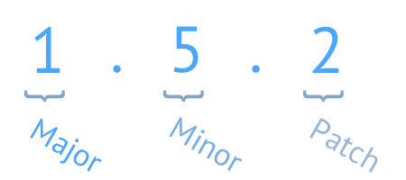

Dependency Management for PHP
Presented by John Kelly
John Kelly
- Software Engineering Lead at ADP Dealer Services
- Zend Certified Engineer - PHP 5.3
- Software engineering for 11 years
There are positions. Ask me afterwards for details.
jobs.adp.com
What is Composer?
- Dependency manager for PHP
- Manages per-project dependencies
- Over 37,000 projects registered
What's wrong with PEAR?
- Manages system-wide dependencies
- Application doesn't manage dependencies
Using Composer - Basics
# composer.json
{
"require": {
"silex/silex": "~1.1"
}
}
$ composer installSemantic Versioning

Definitions
- MAJOR
- When you make incompatible API changes
- MINOR
- When you add functionality in a backwards-compatible manner
- PATCH
- When you make backwards compatible bug fixes
Version Syntax
Exact version
1.0.2
# composer.json
{
"require": {
"silex/silex": "1.0.2"
}
}
Range
- >=1.0
- >=1.0,<2.0
- >=1.0,<1.1 | >=1.2
# composer.json
{
"require": {
"silex/silex": ">=1.0,<1.1 | >=1.2"
}
}
Wildcard
- 1.0.*
- 1.*
# composer.json
{
"require": {
"silex/silex": "1.0.*"
}
}
Tilde Operator
- ~1.2
- ~1.2.1
# composer.json
{
"require": {
"silex/silex": "~1.2"
}
}
Branches
dev prefix is used to specify a specific branch.
- dev-master
- dev-newFeature
- dev-feature/newFeatureName
# composer.json
{
"require": {
"silex/silex": "dev-master"
}
}
Aliases
Used to alias a branch to a specific version.
# composer.json
{
"require": {
"silex/silex": "dev-master as 1.2.9",
"guzzle/http": "dev-newFeature as 2.1.3"
}
}
Lock file
composer.lock
Contains the version specific information of your last install/update.
Custom Installers
Allows for a package maintainer to customize the installation of their package.
phpDocumentor example
{
"name": "phpdocumentor/template-responsive",
"type": "phpdocumentor-template",
"require": {
"phpdocumentor/template-installer-plugin": "*"
}
}
Plugins
Gives the ability to alter or expand Composer's functionality.
Event Handling
- COMMAND
- PRE_FILE_DOWNLOAD
Scripts
Execute custom code or package-specific commands during the composer execution process.
- pre/post-install-cmd: occurs before the install command is executed.
- pre/post-update-cmd: occurs before the update command is executed.
- pre/post-status-cmd: occurs before the status command is executed.
- pre/post-package-install: occurs before a package is installed.
- pre/post-package-update: occurs before a package is updated.
- pre/post-package-uninstall: occurs before a package has been uninstalled.
- pre/post-autoload-dump: occurs before the autoloader is dumped, either during install/update, or via the dump-autoload command.
- post-root-package-install: occurs after the root package has been installed, during the create-project command.
- post-create-project-cmd: occurs after the create-project command is executed.
- ...
Private Packages
with Satis
Host your own composer repository.
Vendor binaries
Any command line script that a Composer package would like to pass along to a user who installs the package should be listed as a vendor binary.
# composer.json
{
"bin": [
"bin/my-script",
"bin/my-other-script"
]
}